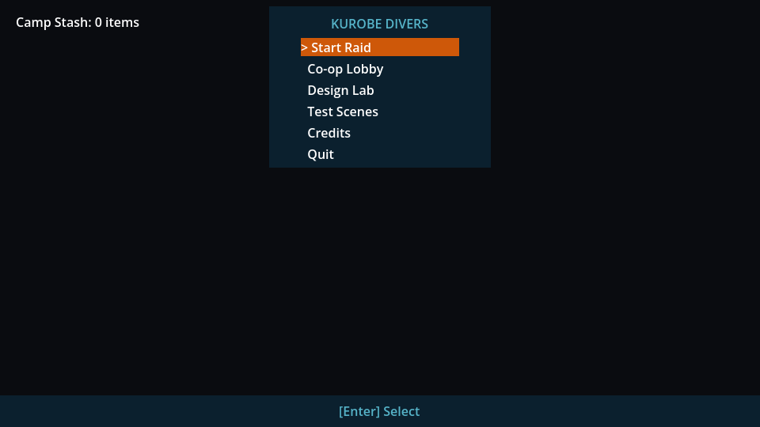
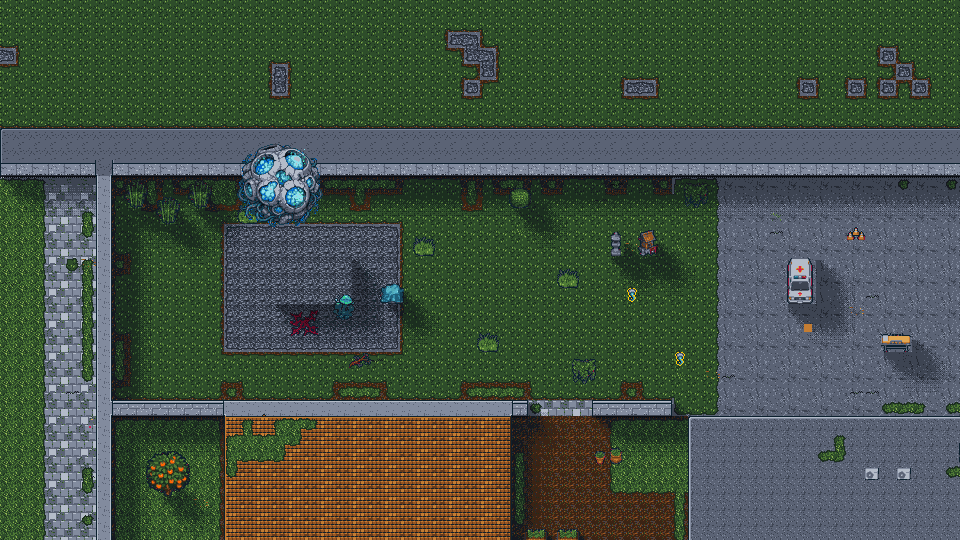
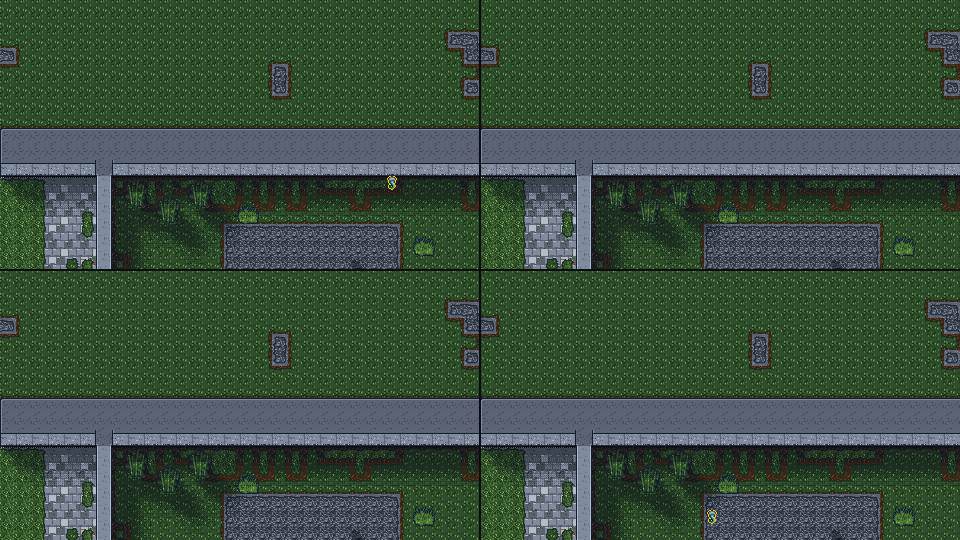

Kurobe Divers
Build of f1e97def00df, 2026-10-23T23:06:44Z. Play it. Plug in gamepads before you start; press A or Start on each to join.



Merged changes, newest first
- #484 Name the winning engines on the LimeZu review page 2026-10-23T22:56Z
- #483 Add a graph-coloring LimeZu district engine, scenes and deck 2026-10-23T22:11Z
- #481 Add a bin-packing LimeZu placement engine with scenes and deck 2026-10-23T21:47Z
- #482 Add a Truchet tile LimeZu path engine with scenes and deck 2026-10-23T21:27Z
- #480 Add a squarified treemap LimeZu parcel engine, scenes and deck 2026-10-23T21:07Z
- #479 Add a force-directed LimeZu village engine with scenes and deck 2026-10-23T20:21Z
- #478 Switch the NBP study to protocol v2: fixed sheets, varied prompt 2026-10-23T20:02Z
- #477 Add a space-filling curve LimeZu market engine, scenes and deck 2026-10-22T00:04Z
- #473 Add an MST utility-network LimeZu placement engine with deck 2026-10-21T23:54Z
- #476 Add a circle-packing LimeZu placement engine with scenes and deck 2026-10-21T23:24Z
- #475 Add a Markov random field LimeZu placement engine with three candidates 2026-10-21T23:04Z
- #471 Add a particle swarm LimeZu prop placement engine, scenes and deck 2026-10-21T22:44Z
- #474 Add a genetic algorithm LimeZu block density engine and its deck 2026-10-21T22:35Z
- #472 Add an A* road LimeZu placement engine with scenes and deck 2026-10-21T22:17Z
- #469 Add a site percolation LimeZu placement engine, scenes and deck 2026-10-21T21:50Z
- #467 Add an Ising-model district zoning LimeZu engine, scenes and deck 2026-10-21T21:30Z
- #470 Add a Penrose P3 plaza LimeZu placement engine, scenes and deck 2026-10-21T21:10Z
- #465 Add a Bezier spline LimeZu road engine with scenes and deck 2026-10-21T20:50Z
- #468 Add a random prefab placer for walkable LimeZu scenes 2026-10-21T20:20Z
- #466 Add a K-Means district LimeZu placement engine, scenes and deck 2026-10-21T19:46Z
- #458 Add a metaball POI-cluster LimeZu placement engine with deck 2026-10-21T19:19Z
- #463 Add a CSG LimeZu placement engine, three layouts and their deck 2026-10-21T18:56Z
- #464 Add a Physarum slime-mould road engine for LimeZu parks, with deck 2026-10-21T18:31Z
- #462 Add a space colonization LimeZu park engine, scenes and deck 2026-10-21T18:12Z
- #461 Add an RRT path-network LimeZu placement engine with scenes and deck 2026-10-21T17:48Z
- #459 Add a Wang tile LimeZu placement engine with scenes and deck 2026-10-21T17:21Z
- #453 Add a hydraulic erosion LimeZu placement engine, scenes and deck 2026-10-21T16:56Z
- #460 Commit missing .png.import files for 22 LimeZu terrain scenes 2026-10-21T16:42Z
- #457 Add a random-walk LimeZu placement engine for winding paths 2026-10-21T16:30Z
- #456 Add an ant-colony trail LimeZu placement engine, scenes and deck 2026-10-21T16:06Z
- #448 Add a quadtree zoning LimeZu placement engine, city scenes and deck 2026-10-21T15:46Z
- #455 Add a Gray-Scott reaction-diffusion LimeZu engine, scenes and deck 2026-10-21T15:17Z
- #451 Add a marching squares LimeZu terrain engine with scenes and deck 2026-10-21T14:53Z
- #454 Fix limezu coverage page drift and read-only grammar_gen test 2026-10-21T14:41Z
- #452 Add a Diamond-Square heightmap LimeZu engine with terraces and stairs 2026-10-21T14:28Z
- #450 Add a Boids flocking LimeZu park engine with scenes and deck 2026-10-21T14:02Z
- #449 Add a Delaunay street placement engine for LimeZu with its deck 2026-10-21T13:31Z
- #447 Add a rigid body settling LimeZu placement engine, scenes and deck 2026-10-21T13:11Z
- #442 Add a tensor-field street-network LimeZu placement engine and deck 2026-10-21T12:41Z
- #437 Play the LimeZu street under rain, dust and fog particles 2026-10-21T12:23Z
- #445 Add a recursive lot subdivision LimeZu engine, district and deck 2026-10-21T12:05Z
- #446 Add a simulated annealing LimeZu block layout engine and its deck 2026-10-21T11:46Z
- #444 Add a flow-field desire-path park engine for LimeZu with deck 2026-10-21T11:29Z
- #443 Add a maze-generation LimeZu placement engine for dense alleys 2026-10-21T11:09Z
- #441 Add a Voronoi district placement engine for LimeZu with its deck 2026-10-21T10:45Z
- #440 Add a masked tile transformer on the NBP dataset with playable scenes 2026-10-21T10:28Z
- #426 Add BSP interior floorplan experiment for LimeZu packs (F5f2722) 2026-10-21T10:09Z
- #433 Add a DLA ruins LimeZu placement engine, scenes and deck 2026-10-21T09:50Z
- #427 Add a Poisson disk LimeZu placement engine, park scene and deck 2026-10-21T09:25Z
- #436 Add a multi-octave noise biome LimeZu placement engine and deck 2026-10-21T08:55Z
- #438 Use NBP as the model: validate LimeZu scenes and re-prompt them 2026-10-21T08:06Z
- #439 Keep the LimeZu review page building when a deck names no engine 2026-10-21T07:10Z
- #430 Add a Space Syntax graph-rewriting LimeZu placement engine 2026-10-21T06:40Z
- #435 Add NBP N x N pattern model, sampler and nine walkable scenes 2026-10-21T05:46Z
- #434 Induce a split grammar of tile usage from the NBP corpus (R27 rung 4) 2026-10-21T04:41Z
- #432 Add a LimeZu placement-engine review page built from the decks 2026-10-21T03:56Z
- #429 Generate LimeZu scenes from the grammar and refine its priors in a loop 2026-10-21T03:33Z
- #431 Add the NBP tile-usage harness and run its round 1 on Modern Exteriors 2026-10-21T02:34Z
- #420 Play the LimeZu street with animated lamps, light, Divers and HUD 2026-10-21T01:51Z
- #428 Add an L-system street-network LimeZu placement engine and its deck 2026-10-21T01:12Z
- #415 Fill LimeZu scenes by class-constrained WFC from the packs' examples 2026-10-21T01:00Z
- #423 Author a persistent LimeZu town with an agent-in-the-loop placer 2026-10-20T22:57Z
- #425 Grow LimeZu parks with cellular automata, with scenes and a deck 2026-10-20T22:46Z
- #424 Record and critique the LimeZu terrain-sets street beside compose.py 2026-10-20T22:33Z
- #422 Compose Fe214bb's footprint plans from LimeZu (F32ff35 part 2 of 2) 2026-10-20T21:44Z
- #418 Add a staged-rewrites LimeZu placement engine and its deck 2026-10-20T21:34Z
- #419 Record and pin the ZS palette grade on the LimeZu scenes 2026-10-20T20:42Z
- #421 Evaluate LimeZu Tiled automapping rules in walkable scenes and a deck 2026-10-20T20:33Z
- #413 Compose F6a9e9f's block layouts from LimeZu (F32ff35 part 1 of 2) 2026-10-20T20:20Z
- #414 Place LimeZu class maps with Godot TileSet terrain sets 2026-10-20T19:55Z
- #417 Give the LimeZu TileSet Godot terrain sets for blob and line families 2026-10-20T18:06Z
- #411 Split the LimeZu street into ground, Y-sorted props and overhead 2026-10-20T17:56Z
- #416 Measure LimeZu mapping coverage: never-seen tiles, kerbs, relations 2026-10-20T17:48Z
- #408 Build a LimeZu TileSet with collision and navigation from the legend 2026-10-20T17:12Z
- #412 Cut LimeZu prefabs from the packs' rebuilt example maps 2026-10-20T17:02Z
- #410 Compose LimeZu floors comparison scenes on the R18 fixed layout 2026-10-20T16:37Z
- #409 Add tile-map research digest and LimeZu placement guide 2026-10-20T16:14Z
- #407 Export Tiled automapping rules for LimeZu blob and wall families 2026-10-20T15:37Z
- #406 Count a LimeZu tile grammar from the packs' examples, check scenes 2026-10-20T12:37Z
- #405 Draw every LimeZu pack object whole: 2-row doors, y-sort, padding 2026-10-20T07:59Z
- #404 Compose five LimeZu example scenes: street, store, home, clinic, gate base 2026-10-20T03:43Z
- #403 Inventory the LimeZu packs by game need against the spec 2026-10-20T01:21Z
- #402 Record and critique the LimeZu Kobayashi scenes beside generated ones 2026-10-19T23:36Z
- #401 Build Hana's floor as the store module's upstairs flat 2026-10-19T23:29Z
- #398 Record and critique test-scene playthroughs on a shared rubric 2026-10-19T22:32Z
- #394 Add the Mori workshop module's exterior shells on an isolated test stage 2026-10-19T22:26Z
- #400 Spawn, tick and draw the chosen Matter Turrets in the raid 2026-10-19T22:09Z
- #399 Draw the chosen Matter Bloom pulse sheet at raid bloom centers 2026-10-19T21:03Z
- #395 Add the store building module: three candidates on test stages 2026-10-19T20:48Z
- #396 Compose the Kobayashi store scenes from the bought LimeZu packs 2026-10-19T19:47Z
- #393 Add the Diver dodge roll on B and play its dodge sheet in the raid 2026-10-19T18:01Z
- #392 Zoom the shared co-op camera smoothly from 2 to 1.25 2026-10-19T17:47Z
- #388 Add roof, water and veil tileset families, scenes and floor scores 2026-10-19T17:06Z
- #391 Bring the slice's light pass and ZS grade onto main, held to the spec 2026-10-19T17:00Z
- #390 Keep the door's magenta key out of seg-map renders and count leaks 2026-10-19T15:51Z
- #389 Add wall top, wall face and door tileset families as terrains 2026-10-19T15:41Z
- #386 Mark the design-systems spec as approved 2026-10-19T14:35Z
- #385 Reveal painted interiors only for living Divers; test roof-hide 2026-10-19T14:14Z
- #384 Make seg-map round 2's three candidates walkable painted scenes 2026-10-19T13:08Z
- #383 Compare the tile-generation experiments and recommend a method 2026-10-19T10:01Z